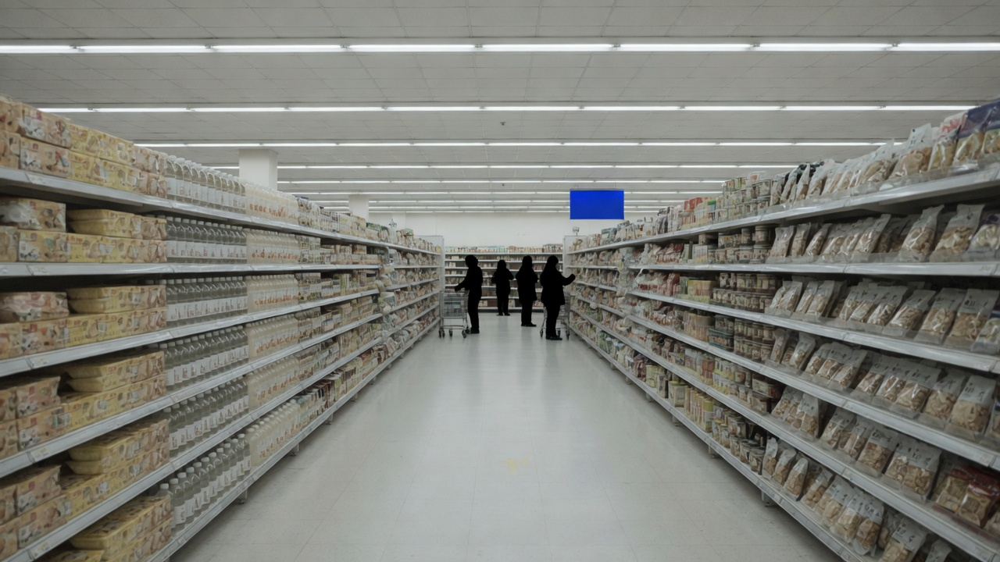

IMPRESSIONS
22个
首页从疑问式网络印象进入，而不是从结论进入。
它应先把来源、时间与不确定性摆上桌。
面对文化、服务与争议，项目不替企业发言，也不把单一叙事当成最终答案。
自由、生活与人的边界。
一线如何拥有责任与判断。
顾客关系不只是话术。
从供应链看到经营选择。
把克制与效率放在同一张图里。
在事实、观点与边界间保留判断空间。
22 个疑问关键词环绕标题，避免把网络标签写成事实。
14 家门店：地址、营业安排、官方照片与地图入口。
13 件已审核事件，含来源账本、时间线与无法确认项。
非官方 AI：流式回答、来源绑定、资料不足时保守作答。
信息看似顺畅，却难以判断依据、时效与遗漏。
回答不只给结论，还给出继续判断所需的证据路径。
它可以继续扩充，但每一次扩充都要通过审核与证据结构。

不替企业发言，不把任何单一叙事当作最终答案。
让来源、时间、边界和不确定性可以被继续追问。
向 5G 多端接入与现场导览推进，但不把路线图当成已落地事实。